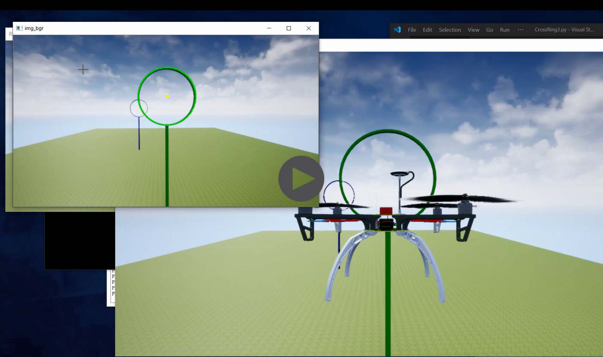
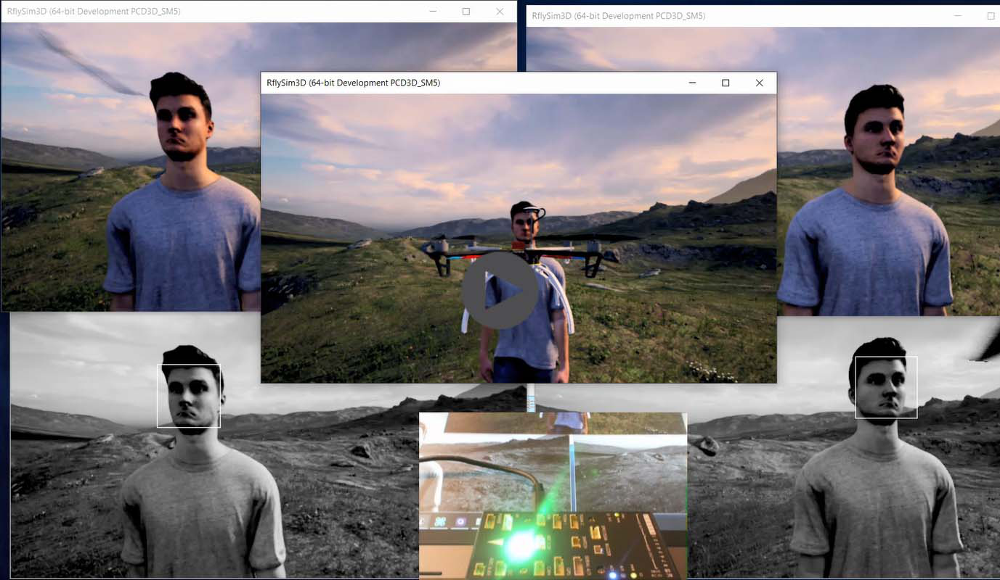
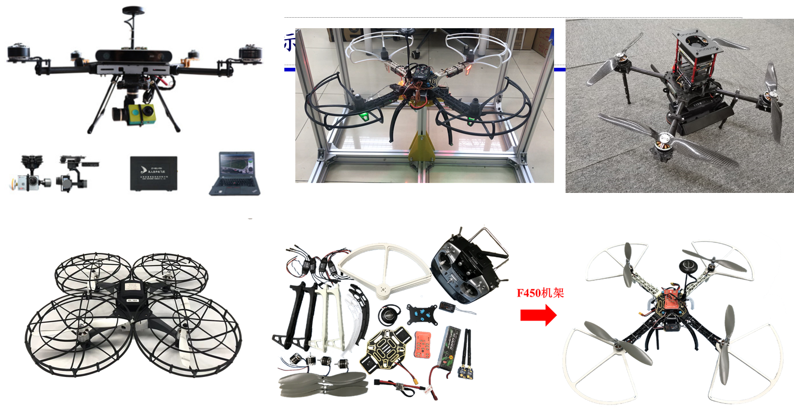

6. UAV Vision/AI Control¶
6.1. Key Problems and Solutions¶
Problem 1: How to capture images from UE4-based program RflySim3D with high frame rate
Solution: we use Python/C/Simulink to directly read screen images from windows API which is independent from RflySim3D, so our interface will not slow down the efficiency of RflySim3D, and we can read the images with a very high frame rate (within 5ms, more than 200Hz ) outside the RflySim3D
Problem 2: How to obtain multiple camera views in the same time
Solution: users can open multiple RflySim3D windows to display different views.
Problem 3: How to change the image size, camera position and angle, and select cameras on the desired vehicles.
Solution: users can set these parameters through mouse and keyboard, or send commands through our UDP interface
Problem 4: How to ensure the algorithm can run successfully on real vehicles？
Solution: Our programming language is Python (we will support MATLAB soon) which is cross-platform, and our communication interface is based on Mavlink which can be processed by Pixhawk directly. So the algorithms can run on onboard computer without modification
6.2. Vision-based Control with Monocular Camera¶
RflySim Advance Function: How to use Python/OpenCV to perform vision-based control of a multicopter UAV
6.3. Vision-based Control with Binocular Camera¶
RflySim Advance Function: How to perform binocular vision control and apply to real multicopter system
6.4. Apply Vision Algorithm to Real Vehicle System¶
We also provide a serial of multicopter vision flight platform to ensure algorithm can be successfully applied to real vehicle systems.
